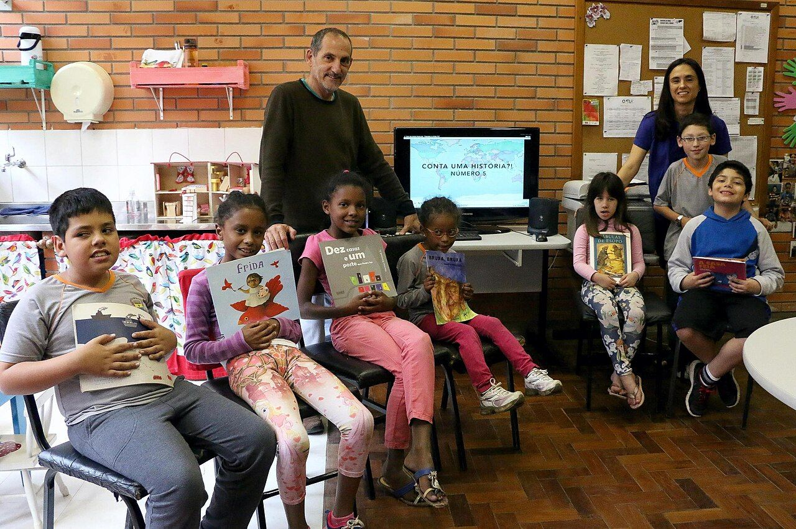
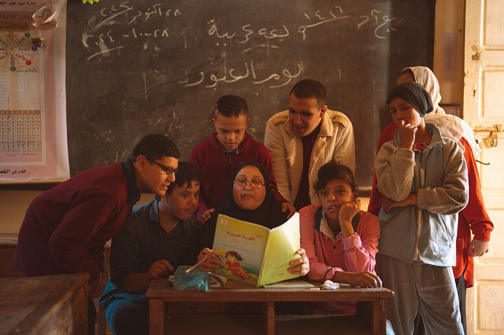

Meus alunos
Cadastre e acompanhe seus alunos e seus perfis pedagógicos.
AcessarConheça seus alunos, adapte atividades, registre resultados e acompanhe a evolução pedagógica.

Cadastre e acompanhe seus alunos e seus perfis pedagógicos.
AcessarVisão geral da turma, números e últimas atividades.
AcessarCrie e organize atividades por disciplina.
AcessarReceba sugestões e crie versões adaptadas.
AcessarRegistre e acompanhe o desempenho.
AcessarConsulte as estratégias já utilizadas com cada aluno.
ConsultarO IncluiEdu não substitui o professor: ele organiza informações e sugere caminhos. Você revisa, ajusta e aprova.

Adaptar é mudar o caminho, não reduzir a expectativa. A habilidade da BNCC continua a mesma.
O próprio estudante e a família sabem o que ajuda. Registre isso no perfil.
Enunciados curtos e etapas numeradas reduzem a sobrecarga.
Imagens, esquemas e material concreto ajudam a turma inteira.
Oral, desenho, marcação, digital: o que importa é mostrar o que aprendeu.
Compartilhe o que funcionou com o AEE, a coordenação e os outros professores.